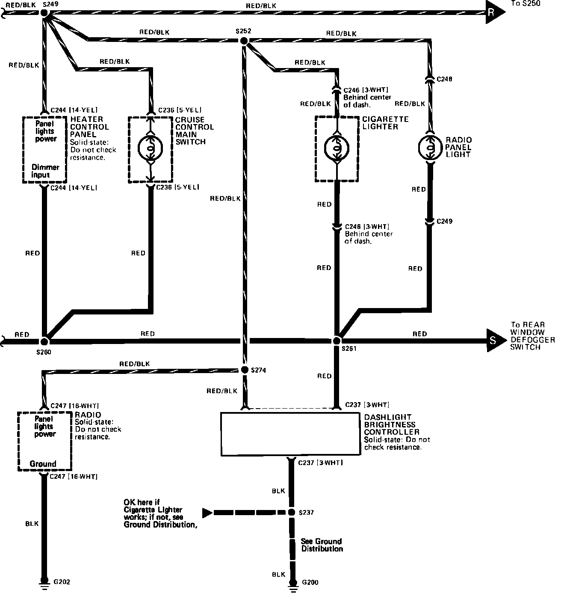

Operation CHARM
: Car repair manuals for everyone.
Home
>>
Acura
>>
1989
>>
Integra L4-1590cc 1.6L DOHC FI
>>
Repair and Diagnosis
>>
Diagrams
>>
Electrical Diagrams
>>
Instrument Cluster / Carrier
>>
Display Illumination
>>
Part 2 of 3
Part 2 of 3
Console & Dash Lamps:
